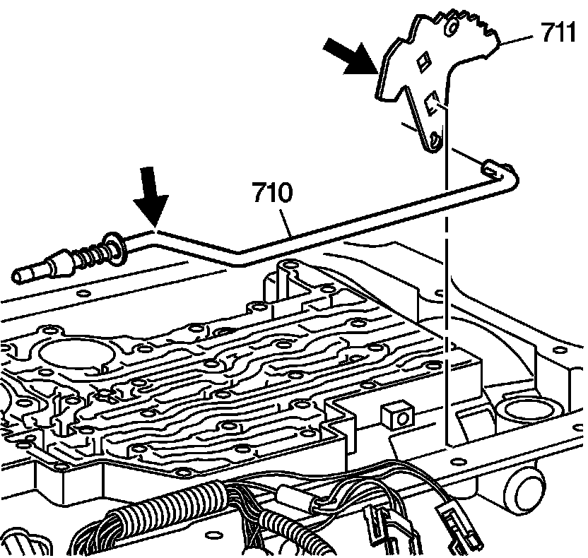
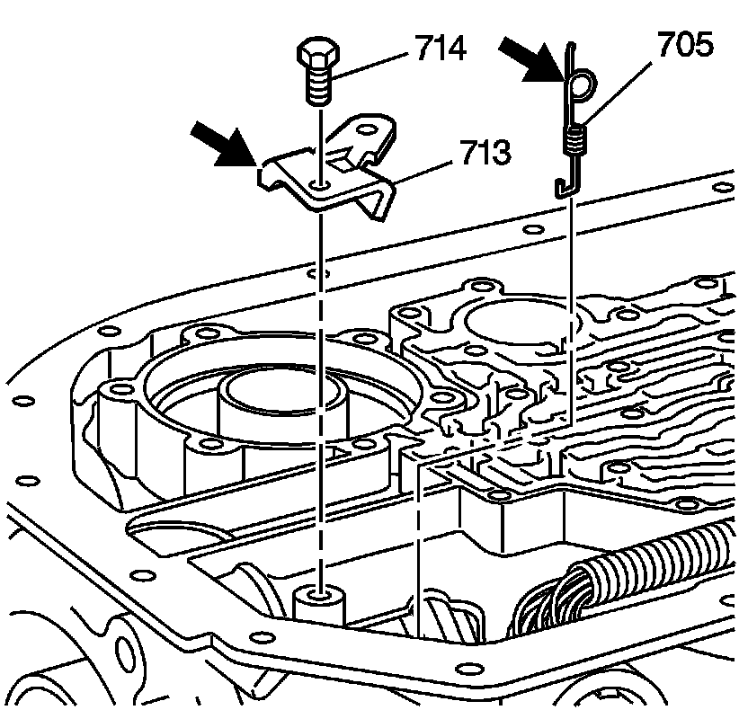
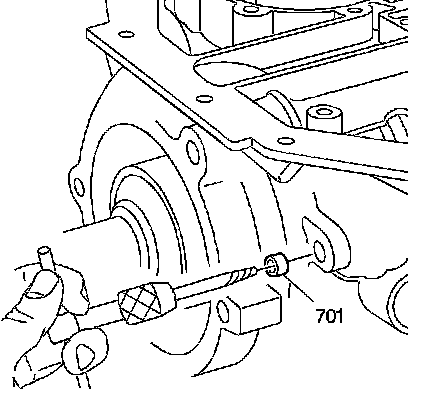
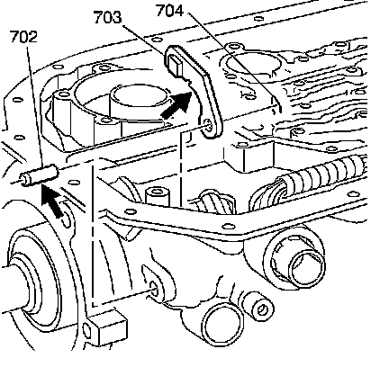

Parking System Components Removal
Parking System Components Removal

Notice: Do not apply excessive force, prying or hammering to any of the parking mechanism parts. This could damage the parking system.
1. Remove the manual shift shaft detent lever assembly (711) and the parking pawl actuator assembly (710).
2. Inspect the manual shift shaft detent lever assembly (711) and the parking pawl actuator assembly (710) for cracks, burrs or damage.

3. Remove the parking pawl actuator bracket (713) and bolts (714).
4. Inspect the parking pawl actuator bracket (713) for cracks, burrs or damage.
5. Remove the parking pawl spring (705).
6. Inspect the parking pawl spring (705) for distortion or damage.

7. Remove the parking pawl shaft hole plug (701) from the transmission case using a screw extractor.

8. Remove the parking pawl shaft retainer (704).
9. Remove the parking pawl shaft (702).
Notice: Do not damage the parking pawl shaft case bore or a fluid leak may occur at the hole plug.
10. Remove the parking pawl (703) from the transmission case.
11. Inspect the parking pawl (703) for cracks, burrs or damage.
12. Inspect the parking pawl shaft (702) for damage and proper fit.